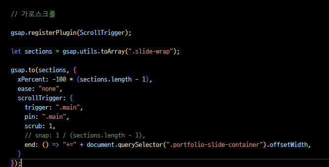

Maison Margiela
Masion Margiela 리디자인
- Period
- Type
- Project
- 2024.06.07 - 2024.06.14
- Web Design & Publishing
- 개인 프로젝트(100%)
Overview
메종 마르지엘라의 기존의 틀을 파괴하고, 준해 후 재창조한다는 해체주의에 매력을 느껴 리디자인 사이트로 선정하게 되었습니다.
본질적인 요소를 탐색하는 브랜드의 분위기와 철학을 신경쓰며 리디자인 및 퍼블리싱을 진행하였습니다.
UXUI Info
concept
기존 사이트에서 반복적으로 사용되던 배경을 포인트로 사용함으로써 완전히 다른 리디자인 페이지가 되는 것을 지양하였습니다.
또한, 레이아웃은 심플하지만 범위가 넓은 동적인 움직임들을 추가해 밋밋한 느낌을 줄였습니다.
많은 이미지를 효과적으로 보여주기 위해 사용한 부분 가로스크롤과 세로로 크게 흐르는 텍스트 애니메이션은 위치나 방향을 다르게 하여
본질은 지키되, 기존의 틀과 달라진 느낌을 보여줍니다.
keywords
# 본질적인
# 고급스러운
# 해체주의
Style Guide
color palette
가독성을 위한 Black & White 외에는 메인 이미지를 활용하여 기존 사이트의 아방가르드한 느낌을 강조했습니다.
# E3DED6
# BEC4C0
# A3ADAD
# A3ADAD
Typogrhapy
국문과 영문 둘 다 본고딕을 기반으로 한 'SUIT'서체를 기본으로 사용, 영문 포인트로 'Goudy Old Style Bold'를 사용하였습니다.
SUIT는 UI 디자인을 위한 폰트로, 가독성이 좋으며 완성도가 높습니다.
Goudy Old Style Bold는 Maison Margiela 로고에 사용된 폰트로, 고전적인 느낌을 줍니다.
SUIT
Maison Margiela
메종 마르지엘라
Soudy-Bold
Maison Margiela
Problem & Solution
-
1. 디자인의 유사성
처음에 디자인 할 때, 깔끔하고 무채색인 느낌이 나의 다른 작업물들과 비슷해보여 고민
->메인 이미지를 마스킹해서 포인트에 넣음으로써 단색보다는 그라디언트 느낌이 나도록 하였고,
고급진 느낌을 더욱 신경써 캐주얼한 느낌의 작업물들과 차이점을 줌. -
2. 가로스크롤 범위
가로 스크롤 영역의 위치가 고정되지 않고 다른 영역까지 이동함. GSAP를 사용하지 않고 html의 class명에 swipe를 추가해보았지만, 오히려 스크롤이 작동하지 않았음.
->여러번의 구글 서치를 통해 swipe를 삭제, 다시 GSAP의 코드에서 가로 스크롤의 영역을 지정하는 부분인

document.querySelector().offsetWidth에 들어가는 class명을 수정했더니 올바르게 적용 -
3. 영상 paralax효과 주기
영상 위아래 부분에 다른 빠르기의 시차효과를 주기 위해 GSAP의 scrollTrigger를 사용하였지만 값만 재할당 될 뿐 작동하지 않는 오류.
->scrollTrigger animation 대신 addEventListener를 사용해 영상 영역을 background로 설정.
위아래 부분에 다른 빠르기는 줄 수 없었지만 paralax효과는 올바르게 적용
Review
-
Bad
-헤더의 배경이 가로 스크롤의 범위까지는 투명하다가 가로스크롤이 끝나는 부분부터 blur 처리가 되길 바랬는데 수정하지 못했다.
- 가로스크롤의 마지막 이미지가 left: 70%가 되었을 때 가로스크롤을 끝내고 다음 영역으로 세로스크롤 되기를 원했는데 구현하지 못했다.
-좋은 자료를 구하지 못해 푸터의 백그라운드 이미지 화질이 좋지 못하다.
-
Good
-처음 구상할 때 생각했던 scrolltriger를 이용한 가로스크롤, parallax를 이용한 시차 효과와 같은 스크롤 이벤트를 다 넣었다.
- 정해진 시간 내에 디자인부터 퍼블리싱까지 온전한 나의 힘으로 작업했다.
-
Review
-나의 다소 편협한 디자인 취향에 대해 반성하게 된 프로젝트였다.
다양한 컨셉으로 디자인과 퍼블리싱을 하는 것이 목표인데, 자꾸 익숙한 방향으로 디자인을 진행하다보니
결국 이전과 똑같은 방향으로 가고있다는 것이 느껴져 힘들었다.
디자인 중간부터 이런 문제를 깨닫고 마지막까지 많은 고민을 했던 것이 앞으로의 작업들에도 큰 도움이 될 것 같다.-사용된 이미지들에 한계가 있어 주어진 자료를 가공하거나 제작할 수 있는 능숙한 툴 능력이 필요하다고 생각했다
-스스로의 한계와 가능성을 알게 된 작업이였던 것 같다.